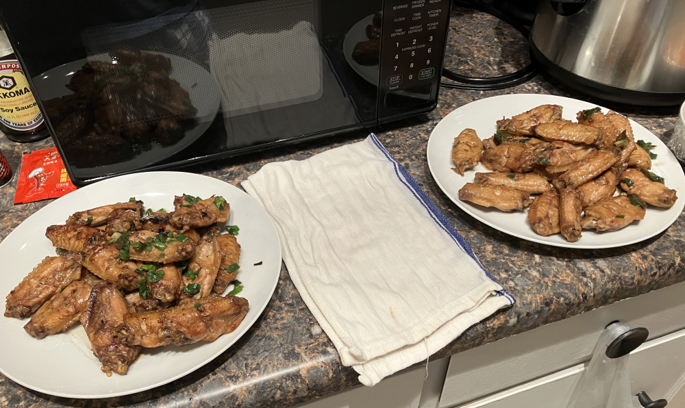

可乐鸡翅 ★ Cola Chicken Wings
 3 servings
3 servings 10 minutes
10 minutes-
 youtube
youtube
 Meat
Meat Sweet
Sweet
香甜嫩滑鸡翅

- 1 磅 鸡翅
将鸡翅焯水后盛出
- 5-7 片 生姜
准备生姜
- 少许 油
锅热加油，放入鸡翅与生姜一起翻炒
- 1 根 青葱
加入青葱白根部分，继续翻炒，直到鸡翅表面金黄
- 少许 酱油
- 少许 盐
加酱油翻炒均匀，加盐
- 1 小罐 可乐
加入可乐，煮至收汁
- -—–
关火，放入剩余青葱翻炒后完成^_^